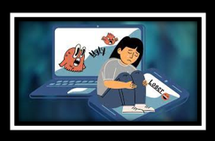
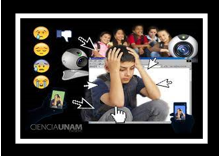
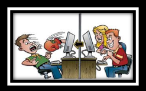
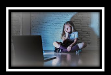
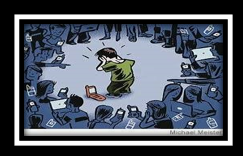

La noción de ciberbullying está compuesta por dos términos: ciber (el elemento compositivo que alude a las redes informáticas o a lo virtual) y bullying (vocablo procedente de la lengua inglesa que refiere al acoso u hostigamiento).
El ciberbullying, también conocido como ciberacoso, es el uso de herramientas digitales para molestar, incomodar o importunar a una persona . Este tipo de hostigamiento puede desarrollarse de múltiples maneras y en algunos constituye un delito penal.
Un individuo víctima del ciberbullying puede recibir correos electrónicos o mensajes telefónicos con agresiones o amenazas; ser objeto de burla o de intimidaciones en las redes sociales; o ser víctima de la difusión de información falsa o privada en internet , por citar algunas posibilidades. Quienes ejercen el ciberbullying buscan provocar preocupación y angustia en el acosado.
Un acosador puede publicar en facebook , Twitter e Instagram fotografías trucadas de la víctima, haciéndola aparecer desnuda o en prácticas sexuales. Además puede amenazarla a través de WhatsApp y del email y crear un perfil falso del acosado en las redes sociales para dañar su imagen pública. Estas prácticas se enmarcan en lo que se conoce como ciberbullying.
Por lo que en teoria el cyberbullying es o indica que es el acoso realizado entre usuarios de una edad similar y contexto social equivalente, mediante el aprovechamiento de medios digitales, desde un teléfono móvil hasta Internet o a través de videojuegos online, por mencionar algunos ejemplos.
